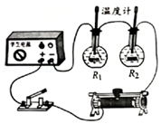

2018年北京市中考物理试题 · 选择题 第21、22题 · 对应解析
21. 小辉想探究电流通过电阻时产生的热量与哪些因素有关。他连接了如图所示的电路进行实验，其中两个完全相同的烧瓶内分别装有质量相等、初温均为25℃的煤油，阻值为5Ω和10Ω的电阻丝R1、R2．闭合开关一段时间后，记录此时两个温度计的示数。根据上述实验，下列说法中正确的是（ ）

A. 此实验探究的是热量与电阻的关系
B. 此实验探究的是热量与电流的关系
C. 此实验探究的是热量与时间的关系
D. 此实验中用温度计示数变化的大小反映产生热量的多少
【答案】AD
【解析】A. B. 如图两电阻串联在电路中，电流相等，而两电阻阻值不同，所以此实验探究的是电阻产生的热量与电阻的关系，故A正确，B错误；
C. 串联电路的通电时间一定是相同的，所以此实验不能探究热量与时间的关系，故C错误；
D. 此实验中电阻产生热量使煤油的温度升高，所以用温度计示数变化的大小反映产生热量的多少，是转换法的应用，故D正确；
故选AD。
点睛：研究电流通过电阻时产生的热量与哪些因素有关的实验中要体会控制变量法的应用，当一个结果受多个因素的影响时都使用此方法进行实验，实验时让一个因素变化，而其它因素都控制相等或相同即控制变量。
22. 如图所示为冬奥会的一些运动项目，关于这些项目中的情景，下列说法中正确的是（ ）
A. 跳台雪运动员在空中下落的过程中，重力势能不变
B. 短道速滑运动员在转弯滑行的过程中，运动状态不变
C. 冰壶运动员掷出去的冰壶能继续向前运动，是由于冰壶具有惯性
D. 冰球运动员用球杆推着冰球使其水平滑动的过程中，冰球所受重力没有做功
【答案】CD
【解析】A. 跳台雪运动员在空中下落的过程中，质量不变，高度降低，所以重力势能减小，故A错误；
B. 只有静止和匀速直线运动的物体运动状态是不变的，短道速滑运动员在转弯滑行的过程中，运动方向发生了变化，所以运动状态是改变的，故B错误；
C. 惯性是保持运动状态不变的性质，所以冰壶运动员掷出去的冰壶能继续向前运动，是由于冰壶具有惯性，故C正确；
D. 冰球运动员用球杆推着冰球使其水平滑动的过程中，冰球所受的重力方向竖直向下，冰球在水平方向运动，没有沿重力的方向运动，所以重力没有做功，故D正确；
故选CD。
点睛：重点理解运动状态不变的含义，静止和匀速直线运动时运动状态不变，即速度和方向都不能改变。
三、实验解答题